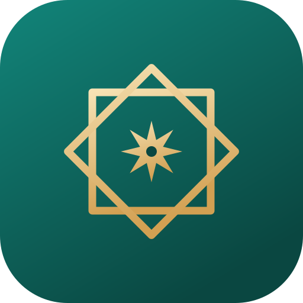

أذكارٌ بتخريجها ودرجاتها، وخططٌ للقراءة والحفظ
الأذكار
٣٠ ذكراً مع تخريج كل حديث ودرجته، وعدّاد يحفظ تقدّمك
٢٠ ذكراً لختام اليوم ومطلعه، بما فيها تسبيح فاطمة وسورة الملك
القرآن
تقسيم أحزاب الصحابة رضي الله عنهم لختم القرآن كل أسبوع
منهج يومي لحفظ صفحة واحدة، مع جلسات الصباح والمراجعة
الرسم العثماني مع الترجمة والتفسير ومعاني الكلمات والتلاوة